Mapeamento estrutural completo de cada componente React, fluxo de autenticação, ordem visual de exibição na tela e integração com o Supabase.
Capítulos 1 & 2: Tela de Login, Shell Global & Home Page
TelaLogin.jsx)
App.jsx, OverviewDashboard.jsx, HomePage.jsx)
TelaLogin.jsx)DocumentadoApp.jsx, OverviewDashboard.jsx, HomePage.jsx, PainelAprovacoes.jsx)DocumentadoDashboardLider.jsx, DashboardMembro.jsx, formulários públicos)PlanejadoPessoasModulo.jsx, DetalhesMembro.jsx, FormularioCadastro.jsx, PainelAtuacoes.jsx)PlanejadoCelulasModulo.jsx, PainelCelulas.jsx, FormularioCelula.jsx, ModalLancarReuniao.jsx)PlanejadoModuloFinanceiro.jsx, TransacoesFinanceiras.jsx, RelatoriosFinanceiros.jsx, ModalImportarNFCe.jsx)PlanejadoEscolasModulo.jsx)PlanejadoGestaoMinisterial.jsx, EscalasMinisteriaisV2.jsx, RepertorioLouvor.jsx)PlanejadoAgendaModulo.jsx, LeitorQRCodeEvento.jsx, ModalReciboQuitacao.jsx)PlanejadoModuloUtilitarios.jsx, TelaConfiguracoes.jsx, ui.jsx)Planejado
Renderizada em src/App.jsx sempre que não há usuário autenticado (exceto em rotas públicas como /cadastro-publico, /inscricao-evento/:id e /confirmar-escala). O componente TelaLogin organiza um cartão dividido (.tl-card, max-width: 960px) em duas colunas no desktop (1fr 420px).
.tl-left) — Ordem de Camadas e Elementos| Ordem | Elemento | Classe / Implementação | Comportamento Visual |
|---|---|---|---|
| 01 | Canvas de Partículas | .tl-canvas (canvasRef) | Anima 38 partículas conectadas por linhas quando dist < 110px via requestAnimationFrame. |
| 02 | Ilustração Vetorial | .tl-illustration (SVG) | Círculo de 6 pessoas ligadas a uma chama central (opacity: 0.10). Oculta no mobile. |
| 03 | Linha de Luz | .tl-glow-line | Feixe horizontal azul translúcido decorativo (top: 55%). Oculto no mobile. |
| 04 | Logotipo | .tl-logo-wrap → .tl-logo-img | Exibe /logo-betesda-mundau.png no topo; centraliza no mobile. |
| 05 | Badge do Sistema | .tl-badge + .tl-badge-dot | Pílula com ponto pulsante "Sistema de Gestão". Oculta no mobile. |
| 06 | Lema & Subtítulo | .tl-headline (Cinzel) | "Vivemos como família, crescendo na Palavra." + descrição institucional. |
| 07 | Card de Versículo | .tl-verse | Citação bíblica de Atos 2:42 com borda esquerda azul. Oculto no mobile. |
.tl-right) — Ordem do Formulário Principal (MODO.LOGIN)| Ordem | Elemento | ID / Classe | Ação e Integração |
|---|---|---|---|
| 01 | Título & Subtítulo | .tl-right-title, .tl-right-sub | Exibe "Bem vindo ao MIB Church" e instrução de acesso ministerial. |
| 02 | Campo E-mail | #email (.tl-input) | Ao perder foco (onBlur), consulta pessoas.permissao via buscarPerfilNoBanco(). |
| 03 | Chip "Perfil identificado" | .tl-perfil-chip *(condicional)* | Mostra sigla (AD, PR, LC, etc.) e nome do perfil quando localizado no banco. |
| 04 | Campo Senha + Olho | #senha + .tl-toggle-pwd | Input protegido com alternador visual (Eye / EyeOff do lucide-react). |
| 05 | Ações Auxiliares | .tl-actions-row | Checkbox Manter acesso à esquerda e link Esqueceu a senha? à direita. |
| 06 | Alerta de Erro | .tl-alert-err *(condicional)* | Exibe mensagens traduzidas (credenciais inválidas, campos vazios, rate limit). |
| 07 | Botão "Entrar no Sistema" | .tl-btn-primary | Chama supabase.auth.signInWithPassword, lê permissões em pessoas e checa senhas padrão temporárias. |
MODO)
Além da tela padrão (MODO.LOGIN), o painel direito alterna entre 4 fluxos adicionais: ESQUECEU (envio de e-mail via resetPasswordForEmail), VERIFICAR_CODIGO (validação de token OTP de 6–8 dígitos via verifyOtp), NOVA_SENHA (ativado após OTP ou parâmetro de URL/evento PASSWORD_RECOVERY) e ALTERAR_SENHA_PADRAO (obrigatório quando o login usa senha temporária como mib123 ou 123456).
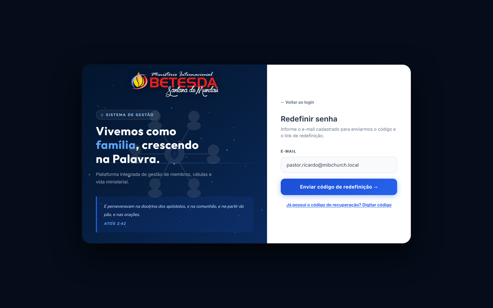
ESQUECEU: solicitação de código/link por e-mail.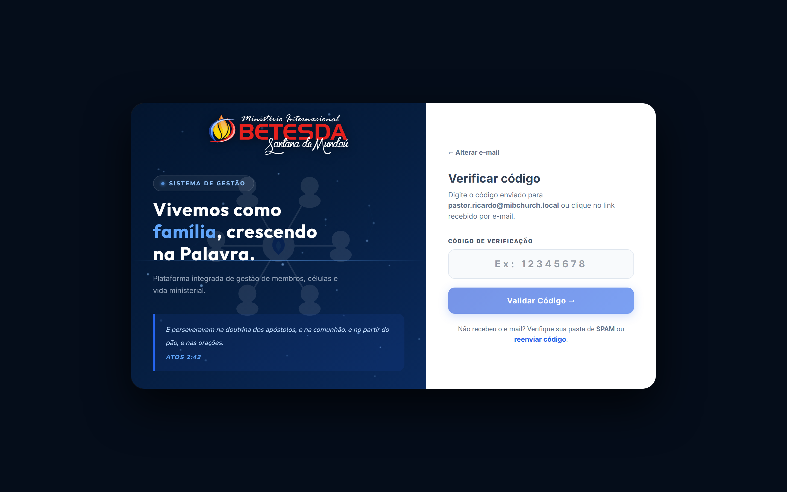
VERIFICAR_CODIGO: validação do OTP numérico.<= 700px)
Em telas até 700px, o layout empilha verticalmente (100dvh):
• O painel superior azul reduz para 38vh, ocultando partículas decorativas secundárias, badge, subtítulo e versículo, centralizando o logotipo e o lema principal.
• O painel inferior branco ocupa todo o restante da tela com campos e botões dimensionados para toque.
App.jsx)
Ao concluir o login, App.jsx executa obterDados() carregando em paralelo (Promise.all) seis tabelas: pessoas, cargos, atuacoes, celulas, zonas_moradia e relatorios_celula. Conforme perfil e viewport (isDesktop >= 768px), o módulo 'dashboard' exibe DashboardLider, DashboardMembro, OverviewDashboard (Desktop) ou HomePage (Mobile).
| Ordem | Componente do Shell | Posição | Responsabilidade |
|---|---|---|---|
| 01 | Logotipo MIB Church | Header Topo • Esq. | Exibe /logo-mib-mundau.png; retorna para a Home Page. |
| 02 | BuscaGlobal | Header Topo • Centro | Pesquisa instantânea em pessoasVisiveis e celulasVisiveis. |
| 03 | Tema & Notificações & Ajustes | Header Topo • Dir. | Botões Claro/Escuro, sino com contador de alertas e atalho Configurações. |
| 04 | UserAvatarDropdown | Header Topo • Extremo Dir. | Avatar do usuário logado com opções Meu Perfil e Sair. |
| 05 | Sidebar Retraída (<aside>) | Esquerda Fixa (w-16) | Navegação modular (Visão Geral, Pessoas, Células, Financeiro, Gestão Ministerial, Escolas, Agenda, Utilitários) com submenus flyout. |
OverviewDashboard.jsx)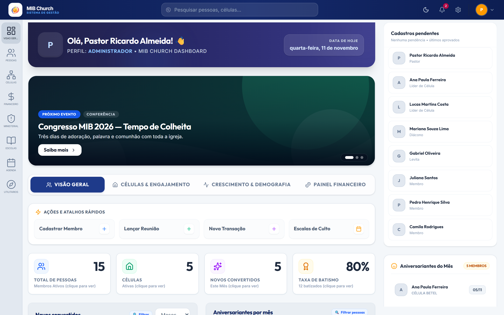
| Ordem | Bloco / Componente | Localização | Descrição e Dados |
|---|---|---|---|
| 01 | Cabeçalho de Boas-Vindas | Topo Fixo | Saudação personalizada, avatar do usuário, badge de perfil e data atual. |
| 02 | Carrossel de Banners | Topo Fixo | agenda_eventos + mural_avisos em paralelo; troca automática a cada 5s, setas e botão Saiba mais. |
| 03 | Menu de Abas (Tabs) | Topo Fixo | Alterna entre Visão Geral, Células & Engajamento, Crescimento & Demografia e Painel Financeiro. |
| 04 | Ações e Atalhos Rápidos | Topo Fixo | 4 botões de fluxo imediato: Cadastrar Membro, Lançar Reunião, Nova Transação e Escalas de Culto. |
| 05 | Grid 4 StatCards KPI | Aba 1 • Principal | Total de Pessoas, Células, Novos Convertidos (mês) e Taxa de Batismo (todos clicáveis com filtro). |
| 06 | CombinationCard | Aba 1 • Esq. | Gráfico de Novos convertidos com alternância Meses/Anos e clique nas barras. |
| 07 | ColumnChart | Aba 1 • Dir. | Gráfico de Aniversariantes por mês (Jan–Dez) com filtro ao clicar na barra. |
| 08 | PainelAprovacoes | Coluna Direita Fixa | Lista cadastros pendente ou os 8 últimos ativos via pessoas em memória (sem query extra). |
| 09 | Card "Aniversariantes do Mês" | Coluna Direita Fixa | Membros do mês ordenados por dia, com Avatar (lazy/async), célula e data dd/mm. |
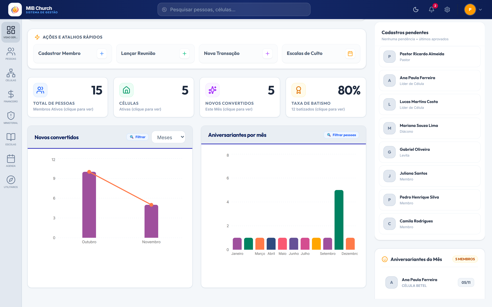
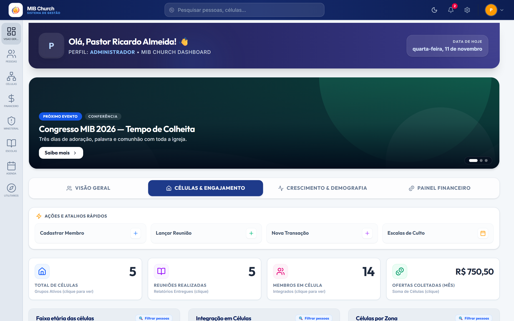
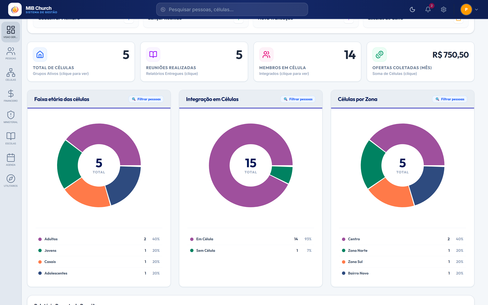
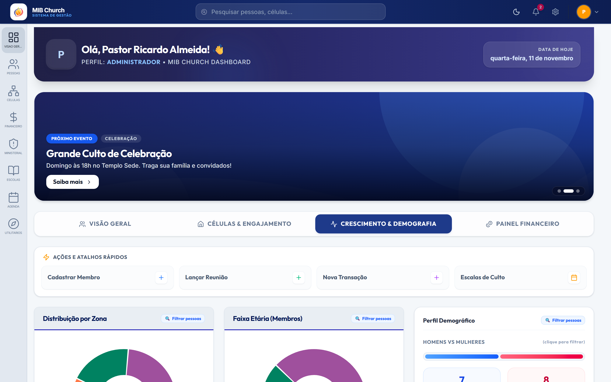
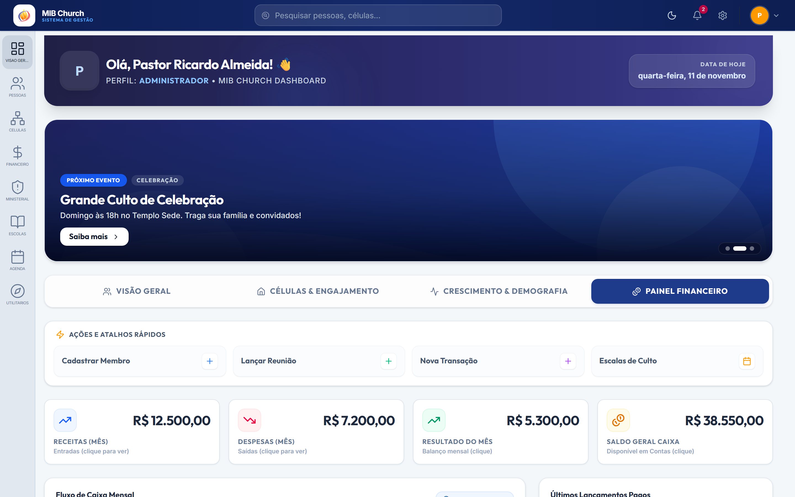
transacoes_financeiras.HomePage.jsx) — Ordem Visual
Em telas < 768px, exibe em coluna única: (1) Cabeçalho Mobile compacto, (2) Abas segmentadas (Geral, Células, Crescimento, Finanças), (3) Grid 2×2 de CardMobileIndicador, (4) Carrossel Mural de Avisos com modal detalhado, (5) Grid Módulos de Acesso (Pessoas, Células, Financeiro, Escolas, Agenda, Utilitários, Gestor Ministerial), (6) Aniversariantes do Mês e (7) PainelAprovacoes.
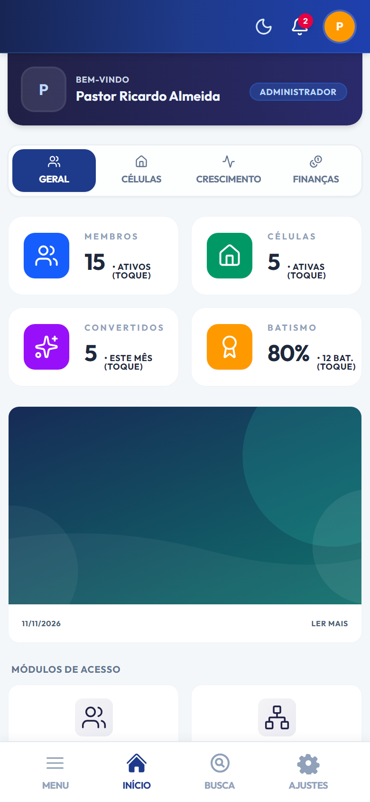
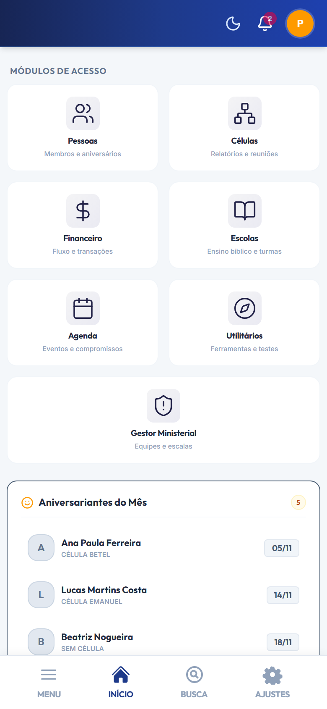
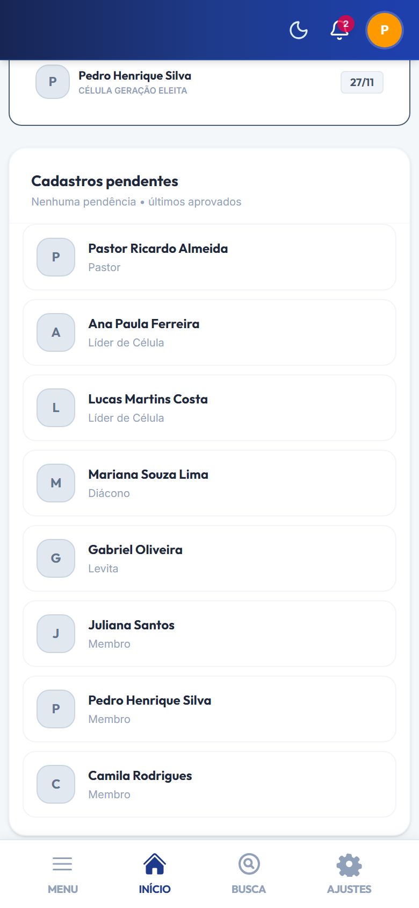
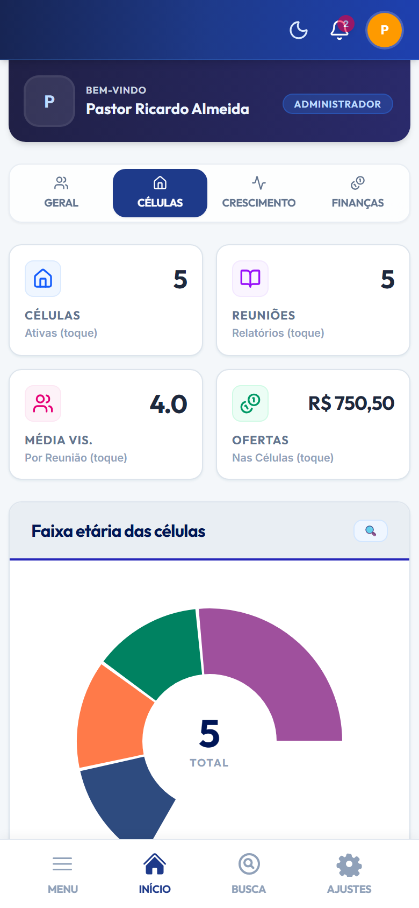
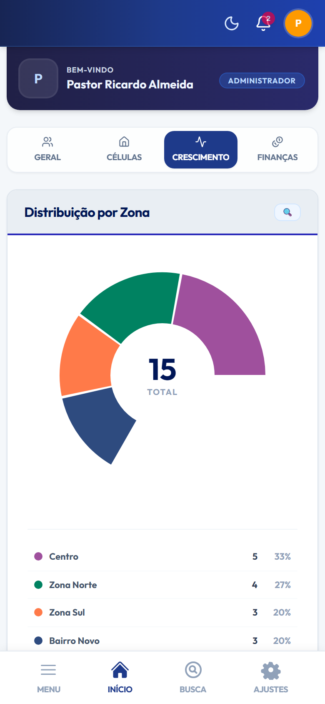
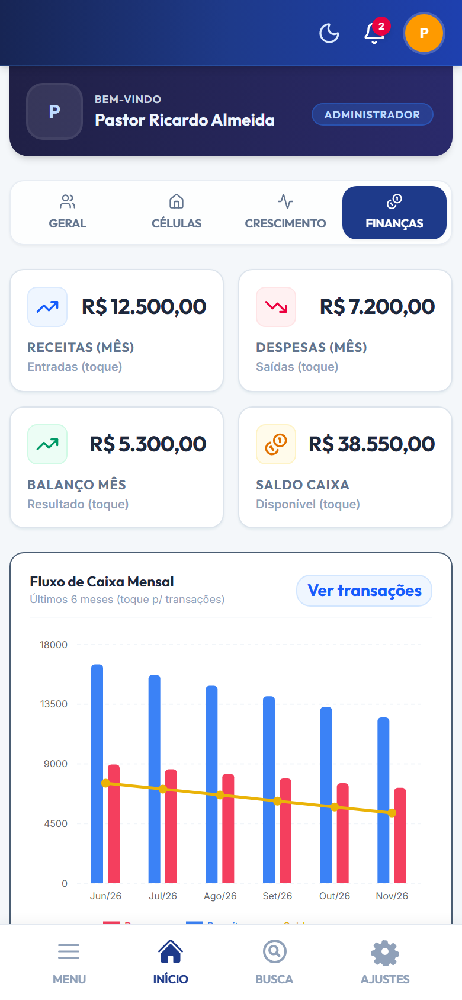